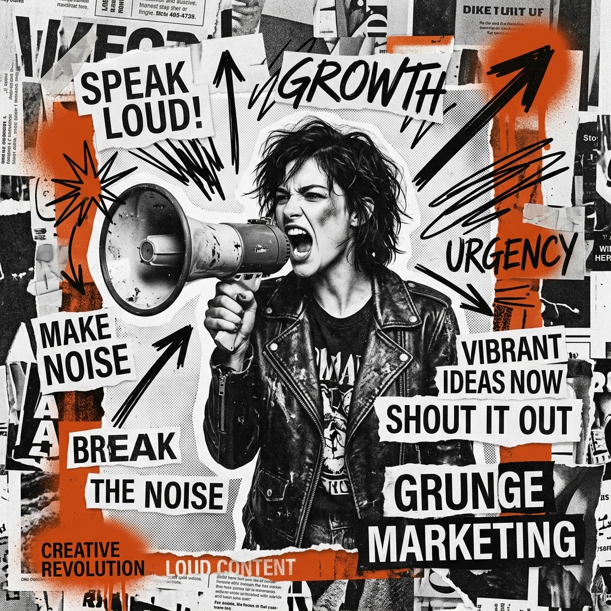

Falta de contenido estratégico
Publicas sin una dirección clara. Tu contenido existe, pero no trabaja para ti. No genera conversaciones, no cualifica prospectos, no acorta el ciclo de venta. Es ruido en lugar de señal.
Performance Creativo
En un mercado saturado, la diferencia entre crecer y estancarse no es el presupuesto. Es la precisión de tu sistema.

El Diagnóstico
Publicas sin una dirección clara. Tu contenido existe, pero no trabaja para ti. No genera conversaciones, no cualifica prospectos, no acorta el ciclo de venta. Es ruido en lugar de señal.
Tienes actividad pero no resultados medibles. No sabes qué pieza de contenido genera leads reales, cuánto cuesta cada cliente adquirido ni dónde se rompe tu embudo. Operas con intuición cuando deberías operar con datos.
Las ideas quedan atrapadas en reuniones, aprobaciones y revisiones interminables. Cuando finalmente publicas, el momento óptimo ya pasó. La velocidad no es opcional: es una ventaja competitiva que tu competencia ya está aprovechando.
La Resolución
No producimos contenido para llenar calendarios. Diseñamos piezas estratégicas con un propósito específico en cada etapa del recorrido de tu cliente ideal.
Cada publicación, cada artículo, cada campaña que construimos responde a una pregunta fundamental: ¿qué acción concreta queremos que tome el lector después de consumir este contenido?
Combinamos narrativa editorial con estructura de conversión. El resultado es contenido que educa, genera confianza y mueve a la acción — simultáneamente.
más leads cualificados en los primeros 90 días
en el ciclo de venta promedio
de entrega para cada pieza de contenido
El Proceso
Analizamos tu contenido actual, tu embudo de ventas y la brecha entre lo que produces y los resultados que obtienes. Identificamos exactamente dónde estás perdiendo oportunidades y construimos un mapa de acción basado en métricas reales, no en suposiciones.
Diseñamos la estructura editorial completa: qué publicar, en qué formato, en qué canal, con qué frecuencia y con qué objetivo de conversión. No es un calendario de redes sociales. Es un sistema de comunicación construido sobre el comportamiento real de tu cliente ideal.
Ejecutamos la producción de contenido con un protocolo de entrega de 72 horas por pieza. Copywriting de alto impacto, diseño editorial consistente y adaptación a cada formato y plataforma. Sin cuellos de botella, sin aprobaciones eternas, sin excusas.
El mejor contenido publicado en el canal equivocado no genera resultados. Activamos cada pieza en los canales donde vive realmente tu audiencia, con la segmentación y el timing adecuados para maximizar el alcance orgánico y el retorno de la inversión publicitaria.
Medimos todo. Cada semana revisamos qué funciona y qué no, ajustamos la estrategia basándonos en datos reales y escalamos lo que genera resultados. Tu sistema de contenido mejora constantemente porque aprende de cada interacción con tu audiencia.
El Diferencial
Las agencias tradicionales crean contenido. Nosotros construimos sistemas de crecimiento. La diferencia no es semántica: es estructural.
Una agencia produce para entregarte piezas. Nosotros diseñamos para que cada pieza sea un engranaje de una máquina más grande cuyo único objetivo es generar demanda real y medible para tu negocio.
Trabajamos con un número limitado de clientes al mismo tiempo porque la profundidad de nuestro trabajo requiere atención genuina. No somos una fábrica de contenido. Somos tu equipo de estrategia creativa integrado en tu operación.
Cada proyecto empieza con una pregunta: ¿cuánto cuesta hoy adquirir un cliente y cuánto debería costar? Todo lo que construimos tiene como norte reducir ese número.
El Arsenal
Textos que venden sin vender. Emails, landing pages, propuestas, guiones y anuncios escritos con la psicología del comprador en mente. Cada palabra tiene un trabajo: mover al lector un paso más cerca de la decisión.
Copy · VentasPosicionamiento de marca personal y corporativa en el canal de mayor retorno para negocios B2B. Contenido editorial que construye autoridad, genera conversaciones relevantes y abre oportunidades de negocio de forma orgánica.
B2B · AutoridadSecuencias de nutrición que convierten suscriptores en clientes sin intervención manual. Diseñamos el flujo completo: bienvenida, educación, consideración y cierre, con segmentación basada en comportamiento real.
Email · AutomatizaciónArquitectura completa del recorrido del cliente: desde el primer contacto hasta el cierre. Landing pages, páginas de captura, ofertas de entrada y optimización de cada punto de fricción en el proceso de compra.
Funnels · UXGestión de inversión publicitaria en Meta Ads y Google Ads con enfoque en ROAS real, no en métricas de vanidad. Creamos los anuncios, optimizamos las audiencias y escalamos lo que funciona con base en datos de conversión.
Ads · ROASArtículos de largo aliento diseñados para posicionarse en búsquedas de intención comercial alta. Investigación de palabras clave, estructura editorial y distribución que convierte tráfico orgánico en pipeline de ventas.
SEO · Tráfico orgánicoGuionización, dirección y edición de videos cortos y largos para YouTube, Instagram y LinkedIn. Desde reels de 30 segundos hasta documentales de marca. El video es el formato de mayor alcance orgánico: lo optimizamos para conversión desde el primer fotograma.
Video · ProducciónDashboard de métricas customizado para tu operación. Seguimiento semanal de KPIs que importan: costo por lead, tasa de conversión por canal, ROI por pieza de contenido y velocidad del embudo. Tomamos decisiones con datos, no con intuición.
Analytics · KPIsEl primer paso es una conversación. Sin pitch de ventas, sin presiones. Analizamos tu situación actual y te decimos honestamente si podemos ayudarte y cómo.